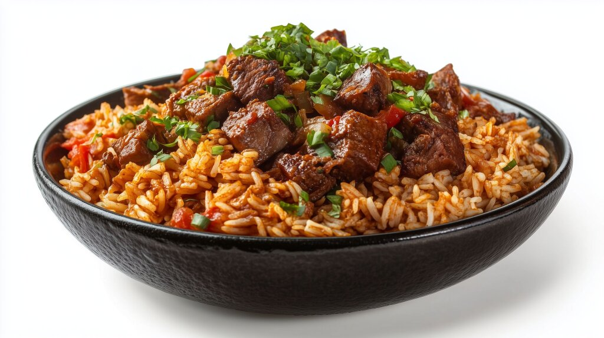

Home
Pilau Recipe

Pilau Served with beef
Pilau is an East African Dish with Indian and Arabic influences. It is typically served at ceremonies or gatherings since it is calorie packed and is rich in proteins and carbs, all in one dish. This makes it convenient and time saving especially when a host would like to impress their visitors. It is typically served with beef stew, bananas (mostly somali), or beans but in most cases, beef stew suffices
This meal calls for patience and expertise especially when identifying the right type of rice, and making up the ingredients from scratch
Ingredients
- 2 cups long grain Basmati rice
- 500g beef chuck/sirloin diced into small cubes
- 1/2 cup vegetable oil
- 2 thinly sliced medium red onions
- 4 cloves garlic thinly sliced
- 2 tbsp ginger (minced)
- 5 medium potatoes (peeled and halved)
- 1 tsp whole cumin seeds
- 1 tsp ground cloves
- 1 tsp ground cinnamon
- 1 tsp black pepper
- 4 cardamon pods
- 2 bay leaves
- salt to taste
Steps
- Place the cubed beef in a pot with a little water, garlic, ginger, and a pinch of salt. Cook until the water evaporates and the meat is tender.
- Heat oil in a large pot over medium heat. Add the sliced onions and fry for 10–15 minutes, stirring often until they turn a deep golden-brown (caramelized, but not burnt).
- Stir in the garlic, ginger, cumin seeds, cardamom, and bay leaves. Add the cooked beef and pilau masala. Fry for 3–5 minutes until the meat and spices are well-coated and fragrant.
- Add the peeled potatoes and pour in 4 cups of water (or broth). Bring to a rolling boil and cook for about 10 minutes until the potatoes are slightly tender.
- Stir in the washed basmati rice. Taste the liquid and add more salt if needed—it should be well-seasoned.
- Bring to a boil until the water level drops to the rice line. Reduce heat to low, cover tightly (use foil under the lid to trap steam), and cook for 20 minutes until all liquid is absorbed.
- Turn off the heat and let it rest covered for 5 minutes. Fluff gently with a fork and serve hot with fresh kachumbari (tomato and onion salsa.